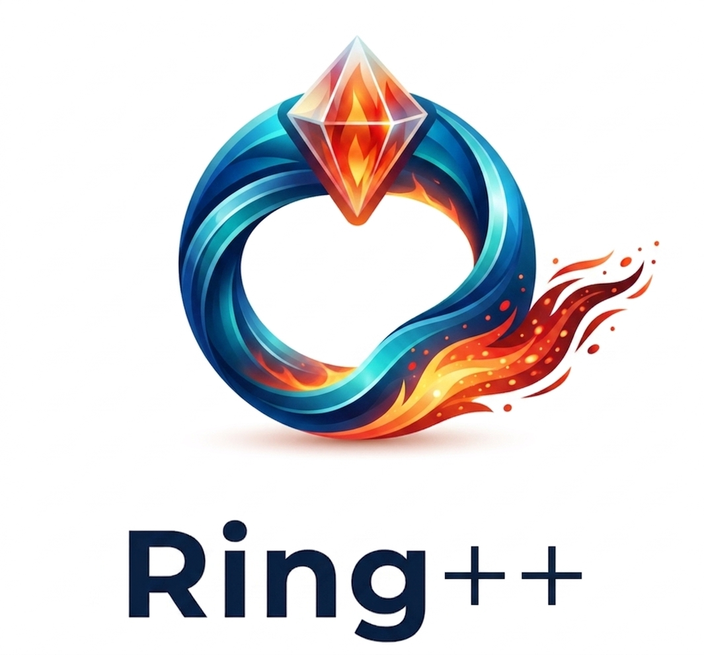

You don't need to know what a pointer is to get the value of one. Ring++ is a small library and a CLI, both free of anything but Ring itself, and each one is also a window onto how Ring's own creator, Mahmoud Fayed, built a small, friendly language over a large and unforgiving one underneath.
Ring++ came out of real projects, not a lab. Teams who liked Ring and wanted to keep using it — for a server talking to a browser, for work that has to survive a dropped connection, for datasets too large to shrug off — kept hitting the same three walls: some operations on big data were slower than they should be, nothing checked a large codebase before it ran, and shipping usually meant asking someone to install a compiler, or a GUI toolkit whose licence terms were their own kind of risk. Ring++ answers each one directly, without leaving Ring and without adding a dependency to it.
Not three separate tools — three angles on the same idea: Ring already has the machinery for this, mostly unused. Each page below shows the Ring you already know, the small change, and the measured difference.
The exact same loop, 75× faster, by changing what you hold — not how you write the loop. One asymmetry in Ring's own design, made visible.
A checker that reads annotations Ring's own parser already accepts and quietly discards. Found two functions in Ring's shipped standard library that have never worked.
Ring can already write a program with no compiler involved — the mechanism just sat unused. One command, five platforms, cross-built from whichever one you're on.
That is the one idea behind all three. Ring passes a list from
function to function by handing over its address — instantly, regardless of
size. A string, on the other hand, gets copied, in full, every single time it
crosses into a function — that's pillar one. Ring's
parser already reads and accepts type annotations like int func Sum(int x,
int y) — it just throws them away after checking they parse —
that's pillar two. And Ring can already turn a
program into bytecode with no compiler in sight — that's
pillar three. None of this required changing Ring. It required noticing
what was already there.
Every figure below is a real gate result or a real corpus run, not a round number picked to look good. The programs that produced them are in the repository.
Ring++'s own library is not a default-yes: three of its eight worked examples conclude plain Ring is the right answer for their shape, and say so before printing a single speed number. A packaged program is a small pair of files, not one self-contained executable. Bare-metal microcontrollers are out of scope entirely — a Ring VM does not fit one, and no packaging tool changes that. And Ring++ will not package a program that reaches Ring's Qt bridge — why, with the reasoning and the numbers.
Ring++ vendors nothing at a user's install time, but two
dependencies are compiled into the CLI itself and their authors deserve their
names here: Mahmoud Fayed and the Ring team's
Ring
language — the design this whole project is built on, not around —
and Youssef Saeed's
tree-sitter-ring
grammar, which every ringpp check runs on. Adopted because it
independently reached the same reading of Ring's type annotations these
measurements did. Built with Andrew Kelley and the Zig team's
Zig, which
compiles the whole CLI into one binary per platform.
Ring++ is one of several Ring foundations from the same author, each standing alone and each dependency-free except for what it names and vendors itself. What running Ring++ against all three actually found — real code, and two mistakes in Ring++'s own published claims, caught along the way.